Renders que se miden,
no solo se miran.
Visualización arquitectónica y documentación técnica de obra
Modelo el local a partir del levantamiento real, sin inventar una sola cota, y lo llevo hasta la imagen final con trazado de rayos en Cycles. Del mismo modelo salen los renders, el recorrido en 360°, los planos acotados y la gráfica de obra: todo cuadra porque todo nace de la misma geometría.
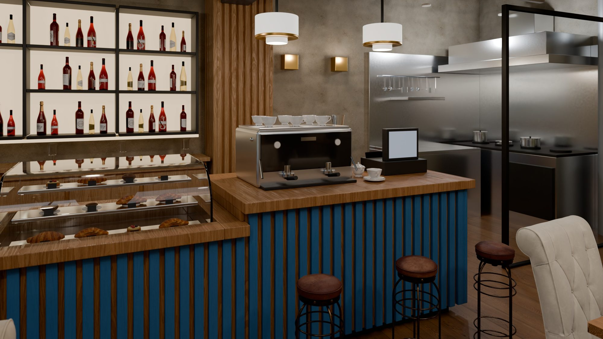
Lo que entrego
Trabajo para estudios de arquitectura, empresas de reformas e interiorismo y promotoras. El encargo puede ser una sola imagen o el paquete completo de un local.
Render fotorrealista de interiores
Trazado de rayos en Cycles con iluminación por HDRI de 8K orientado según el soleamiento real del hueco, materiales PBR escaneados a 4K y muestreo adaptativo hasta 1536 muestras.
Recorrido 360° en el navegador
Panorámicas equirrectangulares de 3072 × 1536 desde puntos comprobados contra la geometría, con salto entre estaciones. Un solo archivo HTML: se abre en el móvil sin instalar nada.
Vuelos de cámara y animación
Trayectoria por interpolación Catmull-Rom con arranque y frenada suaves, verificada contra colisiones antes de renderizar. Render reanudable en orden de bisección progresiva.
Modelo a partir del levantamiento
Geometría construida por código desde los vectores del PDF del proyecto, con las escalas validadas contra las cotas rotuladas del propio plano. Ninguna medida se estima a ojo.
Planos técnicos acotados
Láminas A3 vectoriales a 1:50 con cadenas de cotas en los cuatro lados, cajetín, leyenda, cuadro de superficies y alturas, cuadro de pilares, escala gráfica y norte.
Documentación y gráfica
Presupuestos e informes maquetados en PDF con plantilla propia, y gráfica de obra lista para el instalador: vinilos y rotulación a escala 1:1 y 1:10.
Casa Margot · cucina italiana
Reforma integral de un local de hostelería en Málaga, junto a la Ciudad de la Justicia. Planta baja con doble altura sobre la sala y un altillo con aseo y almacén. Se partió del levantamiento en PDF y del local vacío en obra, y se entregó el paquete completo de visualización y documentación.
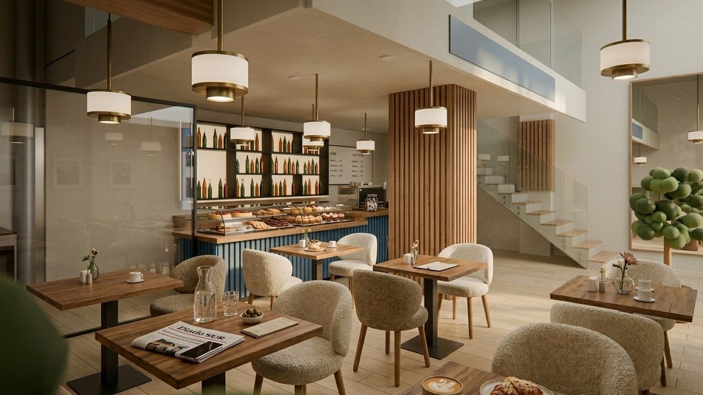
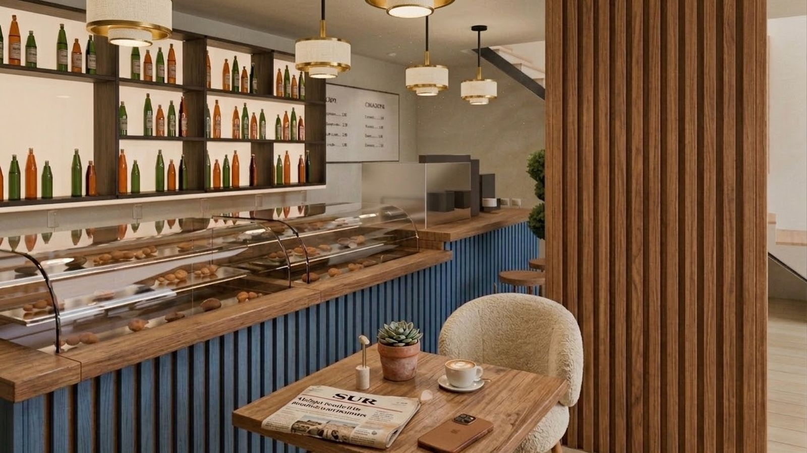
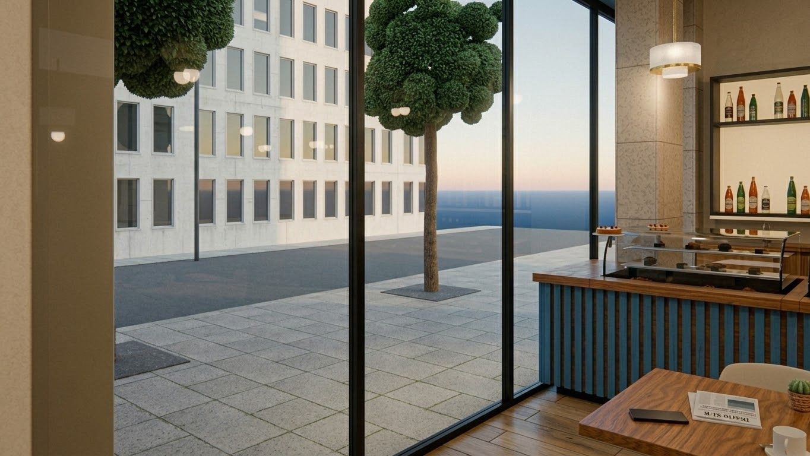
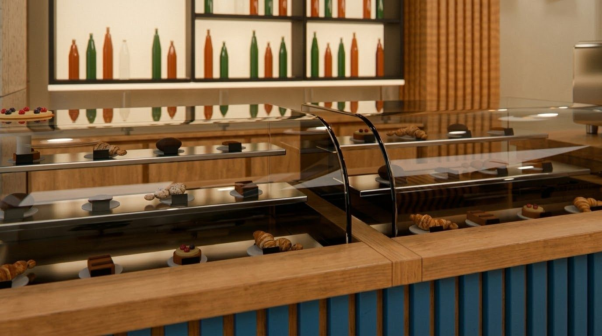
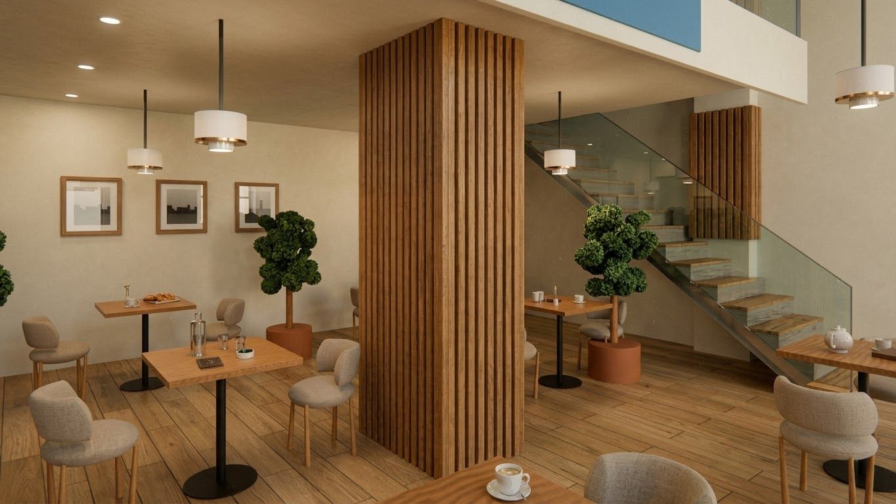
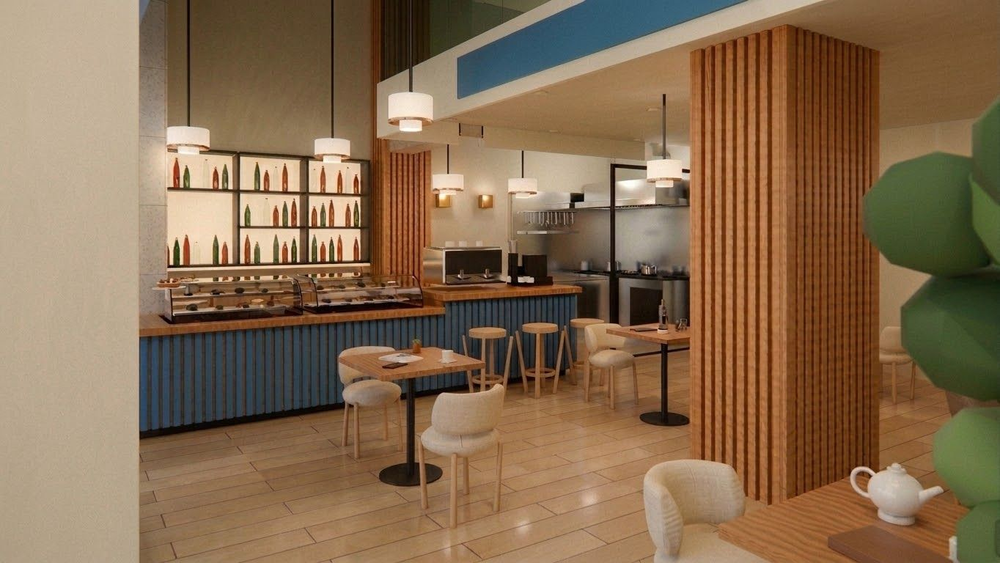
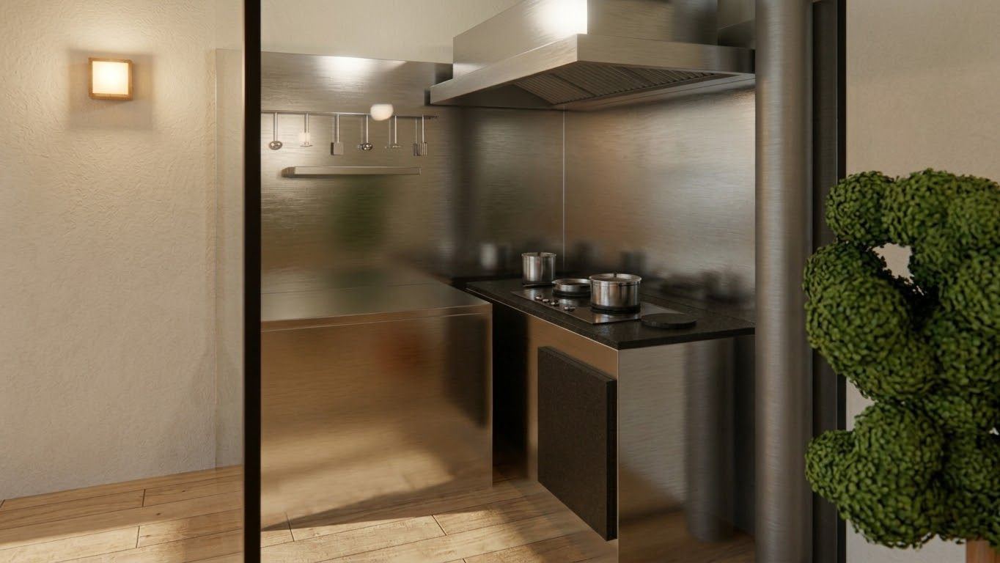
Cómo se construye la imagen
La escena no se monta a mano en el visor: se genera por código, así que es reproducible, auditable y se vuelve a lanzar entera cuando el cliente cambia algo. Esto es lo que hay detrás de cada imagen de arriba.
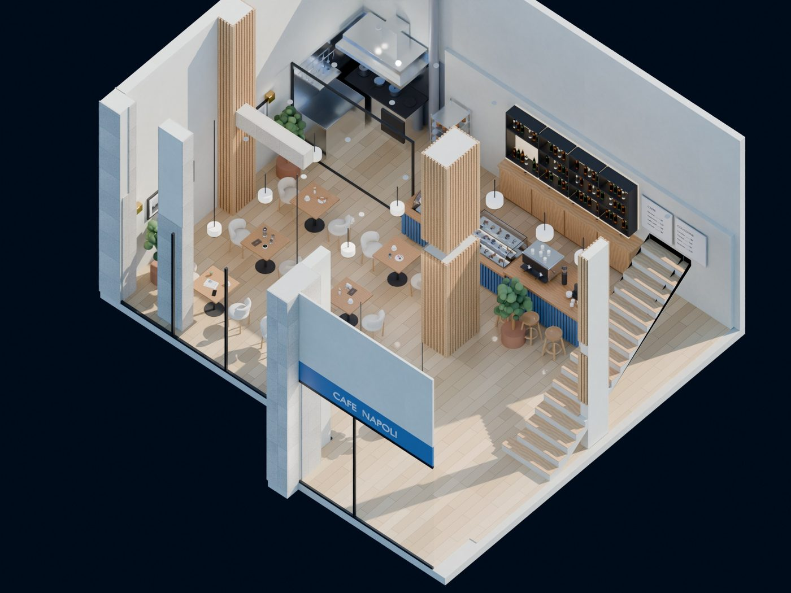
Del PDF a la cota
El modelo se escribe como 1.586 líneas de Ruby en las que cada coordenada es una medida tomada sobre los vectores del plano entregado. Las escalas se validan contra las cotas rotuladas: el aseo sale 3,92 m² frente a los 3,90 m² del plano.
Escena generada por código
1.237 líneas de Python levantan la escena completa en Blender: geometría, materiales, cámaras y luces. Un cambio de distribución se reconstruye entero en segundos, sin arrastrar los errores de haber movido cosas a mano.
Iluminación medida, no inventada
Un HDRI de calle de 8K hace de sol y de fondo, girado para que el soleamiento entre por el hueco real. Fuerza 3,0 para iluminar la escena y 1,4 para lo que ve la cámara, de modo que el exterior no quema el encuadre.
Materiales escaneados
Texturas PBR escaneadas a 4K, acero cepillado con anisotropía real, latón con velo de uso y variación de rugosidad por desgaste en suelo, barra y listones. Bisel global de 2,5 mm en toda la geometría: ninguna arista matemáticamente perfecta.
Nada flotando
Un pase de asentado lanza un rayo desde cada objeto contra sus posibles apoyos, ignorando su propia geometría, y corrige huecos de entre 0,5 y 15 mm. Se sondea la altura real de cada mostrador antes de posar nada encima.
Render por pasadas reanudable
La imagen se calcula en 24 pasadas de 64 muestras con semilla distinta, guardadas como EXR multiparte lineal en media precisión. Se promedian en lineal y se denoisan con OIDN usando albedo y normal. Una caída de la máquina cuesta solo la pasada en curso.
| Parámetro | Valor |
|---|---|
| Motor de render | Cycles · trazado de rayos por CPU y GPU |
| Resolución de entrega | 2560 × 1440 (ampliable a 4K) |
| Muestreo | 1536 muestras adaptativas · umbral 0,005 |
| Rebotes de luz | 12 totales |
| Reducción de ruido | OIDN con pases de albedo y normal |
| Gestión de color | AgX · exposición y balance de blancos fijados |
| Profundidad de bit | PNG de 16 bits y EXR lineal en media precisión |
| Panorámicas 360° | Equirrectangular · 3072 × 1536 · 9 estaciones |
| Animación | 1800 fotogramas · 30 s a 60 fps |
| Planos | A3 vectorial a 1:50 · PDF y SVG |
| Pico de memoria | 9,5 GB tras optimizar los mapas |
El render no viaja solo
Del mismo modelo salen las láminas acotadas que va a usar el industrial, la gráfica que imprime el rotulista y el presupuesto que firma el cliente. Un único origen de medidas para todo el encargo, que es la única forma de que en obra no aparezcan sorpresas.
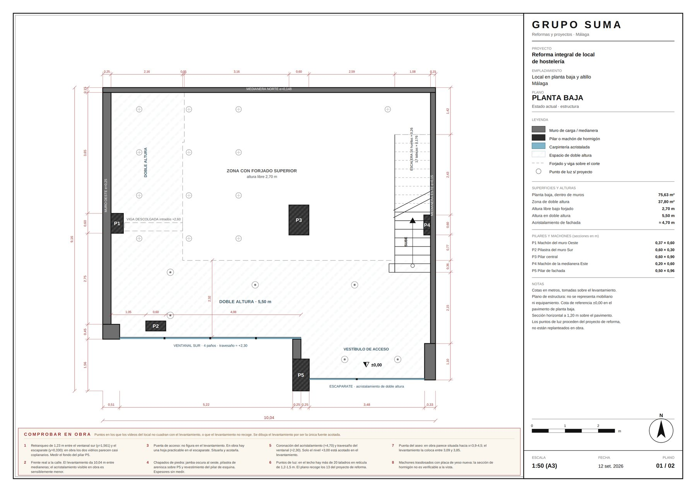
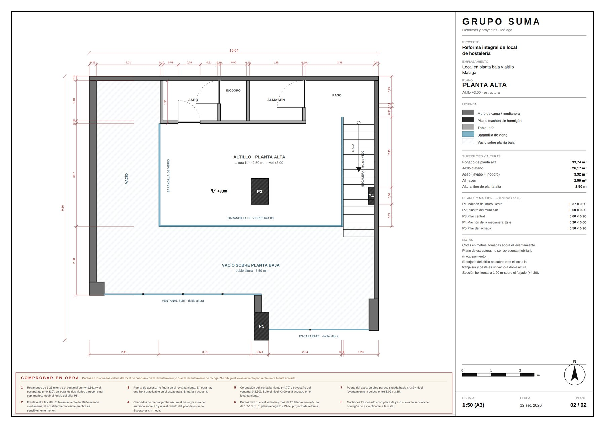
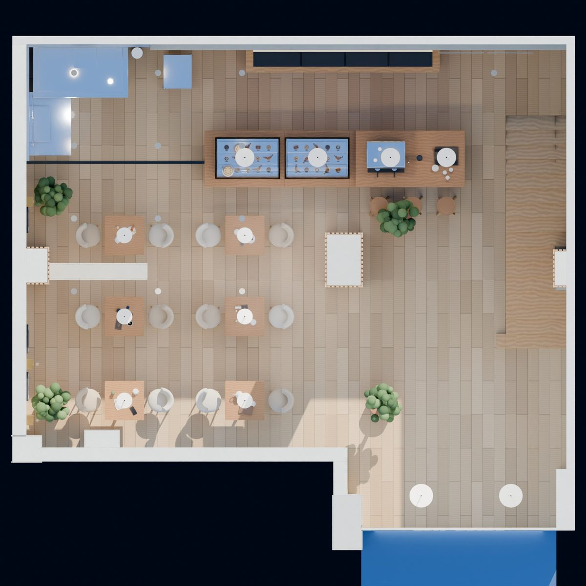
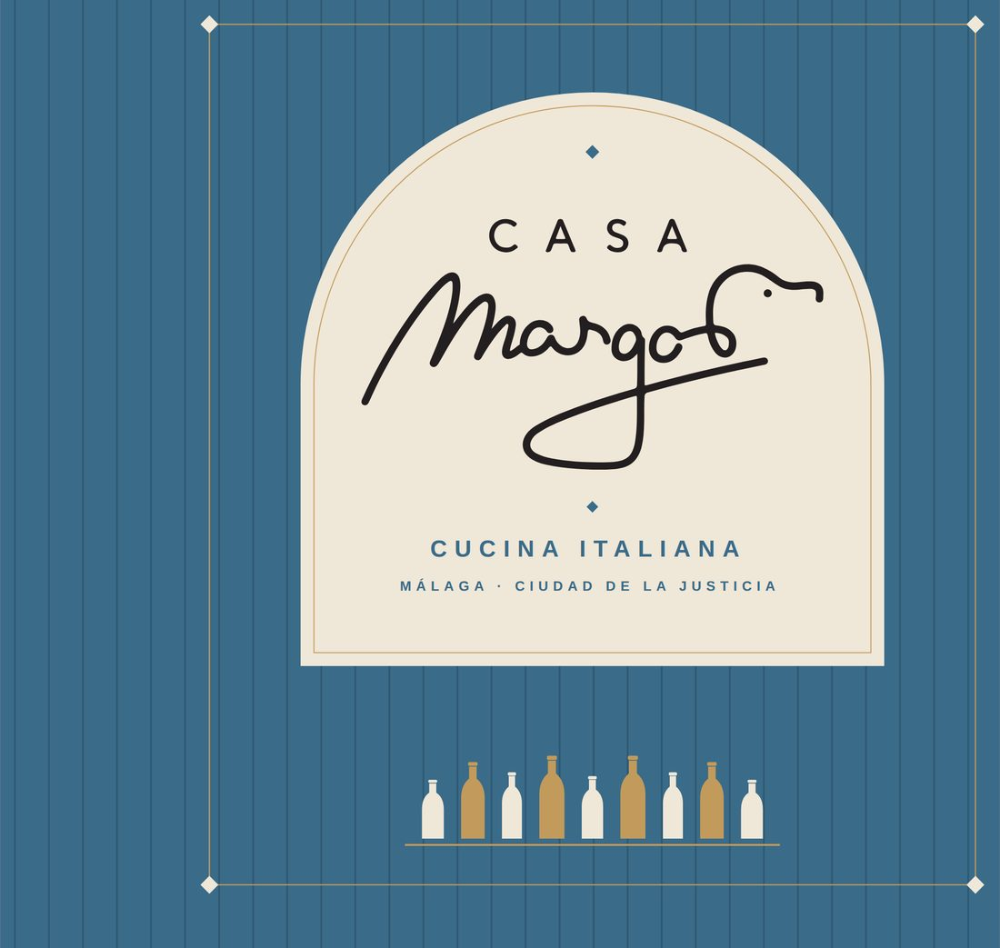
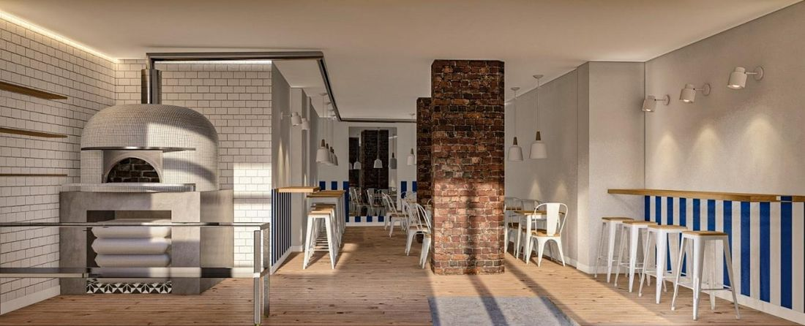
Cómo trabajamos juntos
Cinco pasos, en este orden. Los plazos son sobre un local de hostelería o retail de tamaño medio, contados desde que recibo la documentación completa.
-
Documentación y encaje
Me mandas el plano del estado actual, el proyecto de reforma y las referencias de materiales. Reviso qué falta y te digo qué hace falta medir antes de empezar.
1 día · sin coste
-
Modelo y encuadres
Levanto la geometría sobre tus cotas y te enseño las vistas en gris, sin materiales, para cerrar los encuadres antes de gastar una sola hora de render.
2 a 4 días
-
Materiales e iluminación
Aplico los acabados reales del proyecto y ajusto la luz. Vuelta de correcciones sobre previos rápidos, que es donde se decide de verdad la imagen.
2 a 3 días · 2 rondas incluidas
-
Render final
Tirada a máxima calidad por pasadas, reducción de ruido y gradación de color. Entrega en PNG de 16 bits y JPEG listo para presentar.
1 a 2 días
-
Extras del mismo modelo
Con el modelo ya construido, el recorrido 360°, el vuelo de cámara, las láminas acotadas o la gráfica de obra salen mucho más baratos que encargados por separado.
A convenir
Cuéntame el encargo
Rellena lo que sepas y te contesto con un presupuesto cerrado y un plazo. Si todavía no tienes planos, dímelo igual: en la mayoría de los casos se puede empezar con lo que haya.